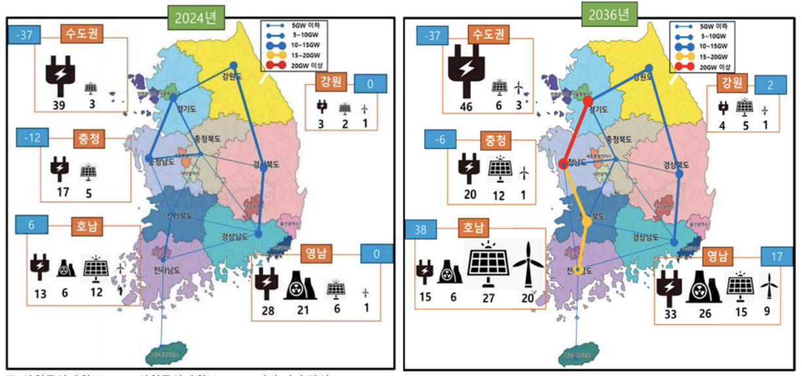

Energy Policy of South Korea
South Korea's energy legislation is strongly shaped by political cycles. As administrations change, the country's energy priorities can shift sharply between nuclear phase-out, renewable expansion, nuclear revival, hydrogen development, and carbon-free energy exports.
Recent policy has treated nuclear energy and hydrogen as major sources of future energy supply. South Korea also connects these sectors to industrial strategy by developing and exporting related technologies.
2017-2022: Moon Jae-in Administration
Policy focus: Nuclear phase-out, aggressive renewable-energy targets, and early hydrogen legislation.
Framework Act on Carbon Neutrality and Green Growth (2021): Made South Korea one of the early countries to legislate a 2050 carbon-neutrality goal and set a legally binding 40% emissions-reduction target by 2030.
Hydrogen Economy Promotion and Hydrogen Safety Management Act (2020): Established one of the world's first dedicated hydrogen-law frameworks, including industrial subsidies, regulatory foundations, and safety standards for hydrogen vehicles and fuel cells.
9th Basic Plan for Electricity Supply and Demand: Banned operational extensions for aging nuclear reactors, cancelled new nuclear construction, and redirected support toward solar power and offshore wind.
2022-2026: Yoon Suk-yeol Administration
Policy focus: Reversal of the nuclear phase-out policy, a renewed nuclear-energy strategy, and international promotion of Carbon-Free Energy (CFE) technologies.
11th Basic Plan for Electricity Supply and Demand: Reestablished nuclear power as a primary baseload source, targeting nuclear generation above 35% by 2038 and promoting the broader CFE framework internationally.
Act on High-Level Radioactive Waste Management: Advanced policy efforts to address permanent nuclear-waste storage, which is necessary for long-term operation of existing nuclear plants.
Clean Hydrogen Certification and Bidding Market revisions: Shifted the hydrogen framework from simple fuel-cell subsidies toward competitive market auctions for low-carbon blue and green hydrogen.
